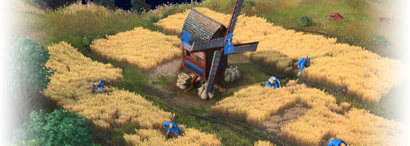

Les bases
Dans Age of Empires 4, chaque joueur commence avec des villagois, un éclaireur et quelques ressources. Le but du jeu est de collecter des ressources sur la carte afin de batir une base militaire et eliminer son adversaire. Age of Empires 4 reprend beacoup les éléments classiques des itérations précédentes, alors faire de choix sur sa composition d'armée est imporant pour s'assurer une victoire.
Les âges
Chaque joueur peut progresser au travers de 4 âges :
- Âge sombre
- Âge féodal
- Âge des chateaux
- Âge impérial
Avancer dans un nouvel âge permet de débloquer de nouveaux batiments, de nouvelles unités militaires et plusieurs recherches pour augmenter le pouvoir de son armée. Le joueur peut passer à l'âge suivant en construisant l'un des deux monuments différents pour chaque avancement d'âge. Le joueur passera instantanément à l'âge suivant après avoir terminé le monument approprié. Chaque batiment spécial a une abileté ou un bonus spécial qui est unique à la civilisation.

Conditions de victoire
Dans une partie multijoueurs, il y a plusieurs méthodes pour gagner. Plus bas ce trouve chacune des conditions de victoire possible pour une partie multijoueurs standard.
Victoire par monuments importants
Chaque joueur commence avec un monuments important, soit le forum principal et au cours de la partie, le joueur construera plusieurs monuments importants pour progresser en technologie. Une partie se termine si un des joueurs détruit tous les monuments imporants de son adversaire. Si un monument est détruit au cours de la partie, le joueur peut le réparer (doit être réparer à 100% de ses points de dégâts) pour être recompter comme batiment indétruit.
Victoire par lieux sacrés
Une des méchaniques présente dans le jeux qui est importante est les lieux sacrés. Présent sur la carte, il y a des lieux sacrés qui sont des structures neutres qui permettent de générer de l'or passivement et d'augmenter le compteur de lieux scarés capturés. Un site sacré peut être capturé par une unité religieuse, disponible à l'âge 3. Il faut 30 secondes pour capturer un site sacré, cependant le compte peut être intérompu par l'adversaire en plaçant une unité sur le site scaré. Lorsque tous les sites sacrés sont contrôlés par un joueur ou une équipe, cela déclenche un compte à rebours de 10 minutes avant une victoire sacrée.
Victoire par merveille
La dernière condition de victoire dans le jeu est une victoire par une merveille. Dans Age of Empires IV, les joueurs peuvent construire une merveille à l'âge impériale pour 3 000 nourriture, bois, or et pierre, soit un total de 12 000 ressources. La civilisation mongole a besoin de 4 000 nourriture, bois et or. Une fois la construction terminée, un compte à rebours démarre pendant 15 minutes. Si le joueur ayant bati la merveille peut la garder en vie pendant 15 minutes sans perdre aux deux autres conditions de victoire, il obtient la victoire.
Ressources
Dans Age of Empires 4, chaque joueur doit collecter des ressources afin de batir des unités et des batiments.
Nourriture
La nourriture est la ressource la plus importante dans Age of Empires 4. Même s'il y a le besoin de bois ou de minerai pour équiper ses soldats, il est encore plus fondamental de garder une source de nourriture constante pour produire des soldats et villageois. Il existe de nombreuses sources de nourriture différentes sur chaque carte et vous devrez rapidement apprendre à les identifier et à les collecter intelligemment. Il existe plusieurs catégories différentes, chacune avec ses propres spécificités et usages qui dépendent des civilisations utlisiées.
| Les baies |
Vous trouverez généralement des buissons de baies autour de votre forum. De toutes les sources de nourriture dans Age of Empires 4, elles sont les moins efficaces en termes d'unités de nourriture par minute. Ils sont cependant la source la plus fiable et la plus durable au début du jeu. Ils finiront par s'épuiser si vous mettez trop de temps à développer vos propres sources de nourriture, mais leurs fruits devraient être plus que suffisants pour constituer votre premier groupe de paysans et recruter des soldats pour défendre vos positions. |
|
|---|---|---|
| Le mouton |
Les moutons sont une excellente source de nourriture, mais beaucoup plus situationnelle que les baies. Contrairement aux baies, qui se trouvent toujours autour de votre point de départ, les moutons sont dispersés au hasard sur la carte. Pour profiter de leur viande, vous devez les trouver et les ramener à votre campement. La viande de mouton donne plus d'unités de nourriture que les baies, quel que soit le temps qu'il vous a fallu pour trouver l'animal, le ramener et le tuer. |
|
| Les fermes |
Les fermes représentent en quelque sorte l'évolution des arbustes à baies. Ils sont une source de nourriture tout aussi facile à collecter et présentent deux grands avantages. La première est que vous pouvez construire vos fermes à peu près n'importe où, vous n'êtes donc plus dépendant des ressources naturelles offertes par la carte. La seconde est que les fermes sont des sources inépuisables de nourriture. Les fermes offrent un rendement alimentaire plus élevé que les baies et les moutons, tant que vous avez un moulin assez proche. L'inconvénient est qu'ils nécessitent un investissement initial dans le bois pour s'installer. Il faut les privilégier certes, mais aussi les protéger, tant qu'on peut les créer. C'est dans ces fermes que doivent se trouver la majorité de vos paysans, et ce jusqu'à la fin de la partie. Sans fermes ni paysans, vous serez vaincu. |
 |
| Les cerfs et sangliers |
La chasse rapporte encore plus de nourriture que l'agriculture, mais vous devrez y consacrer une petite proportion de vos unités. Les cerfs et les sangliers sont répartis sur la carte, tout comme les moutons. Cependant, ils ne sont pas aussi faciles à apprivoiser que nos amis laineux. Si vous voulez profiter de leur viande, vous devrez les tuer sur place. Les cerfs auront tendance à fuir, tandis que les sangliers auront tendance à se défendre. Il est a noté que ce n'est pas toutes les civilisations qui peuvent collecter de la nourriture des sangliers, soit Delhi, Abbasid, Ottoman et Malian. Les sangliers sont généralement situés au centre de la carte, il est donc bien de protéger ses villageois avec des tours ou même un monument défensive comme la barbacane du soleil pour les Chinois. |
|
| Poissons |
Dans Age of Empires 4, il y a deux types de ressources dans la mer, soit les poissons côtiers et les poissons de haute mer. Les poissons en haute mer sont la meilleure ressource alimentaire de tout le jeu. Contrairement aux poissons côtiers, qui peuvent être facilement repérés depuis la terre ferme et récupérés avec les paysans, les bancs de poissons en haute mer sont plus difficiles à trouver et nécessitent un port et navires de pêche. Il est à noter que les poissons côtiers peuvent être récupérés par des navires de pêche, mais les poissons de mers sont en plus grande quantité et peuvent être collectés plus rapidement que les poissons côtiers. |
Le bois
Les bois est une ressource importante dans Age of Empires 4. Il est le plus souvent nécessaire pour la construction de bâtiments ou l'entraînement des unités à distance et s'acquiert généralement en abattant des arbres .
| Forêt |
Le bois est une ressource essentielle car il est nécessaire pour créer des bâtiments dans le jeu. Le bois est principalement obtenu à partir d'arbres répartis sur toute la carte. Les joueurs peuvent construire un centre de dépôt de bois proche d'une foret pour collecter le bois. Une autre chose à garder à l'esprit lors de la récolte du bois est de commencer au bon endroit pour créer un espace naturel pour vos empires et avoir une couverture naturelle suffisante des arbres. Il diminue le besoin de créer des murs précoces et fournit une couverture naturelle pour la base. |
|---|
L'or
| Veines d'or |
L'or est l'une des ressources les plus courantes et les plus essentielles de l'univers d'Age of Empires IV. Le précieux minéral est requis dans presque tous les aspects du jeu, particulièrement dans les recherches et dans la créations d'unités plus puissantes, comme les chevaliers ou les unités de sièges. Pour collecter de l'or, le joueur peut miner cette ressource à partir des veines d'or éparpillées dans la carte. Il y a deux version de veines d'or, soit les réguilères qui contiennent 4000 or et les grosse veines d'or qui contiennent 8000 or. |
|
|---|---|---|
| Commerce |
Le commerce est une partie importante de toute civilisation prospère. Age of Empires IV vous donne la possibilité d'établir des routes commerciales avec des postes d'échanges à travers la carte. L'utilisation du commerce aide à augmenter le nombre de ressources apportées par vos villageois et est importante si vous voulez construire de meilleures unités et avancer votre âge actuel. Les comptoirs commerciaux ne peuvent être utilisés que par des unités spécifiques. Pour obtenir ces unités, vous devrez passer à l'âge II. Une fois que vous aurez atteint le deuxième âge, vous pourrez construire un marché. Les marchés sont utilisés pour échanger vos ressources contre d'autres ressources. Ils peuvent également être utilisés pour créer des commerçants. Une fois que vous avez créé un commerçant. Menez-les à un comptoir commercial et interagissez avec lui. Ils mettront automatiquement en place une route commerciale et ramèneront de l'or dans votre civilisation. |
La pierre
| Pierre |
Tout comme l'or, il est stocké dans le camp minier. Vous aurez besoin de cette ressource
principalement pour construire des murs de pierre et des donjons.
*La civilisation mongole n'exploite pas la pierre de la manière habituelle. Ils ne peuvent pas non plus échanger ce matériel sur le marché. Ils utilisent l'unique Ovoo pour collecter la pierre. |
|---|